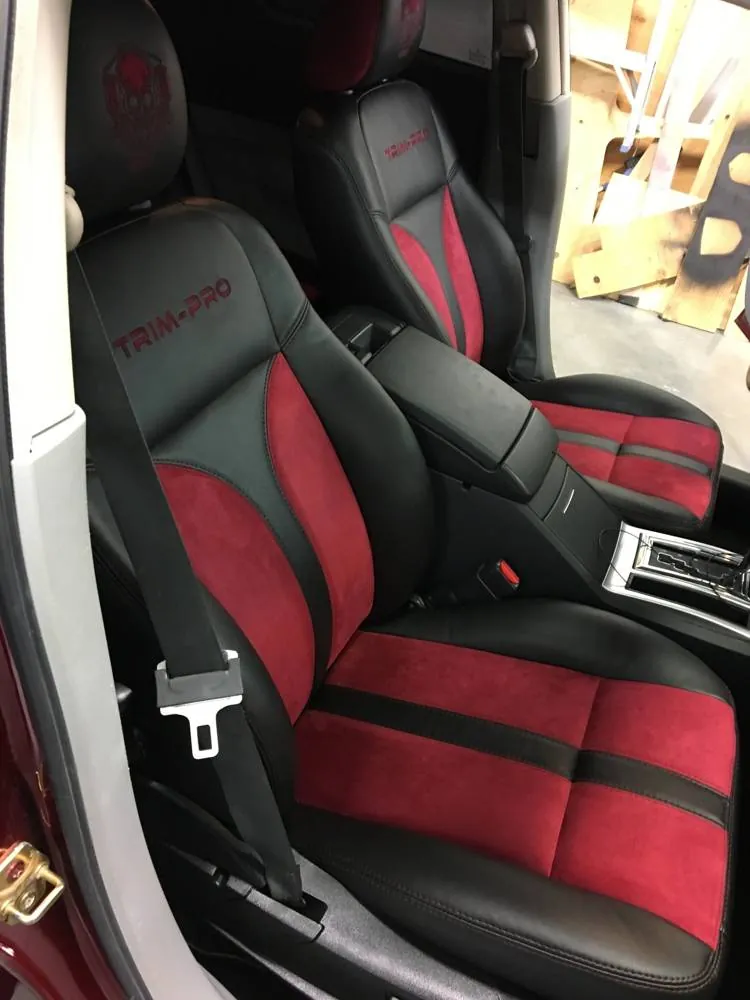
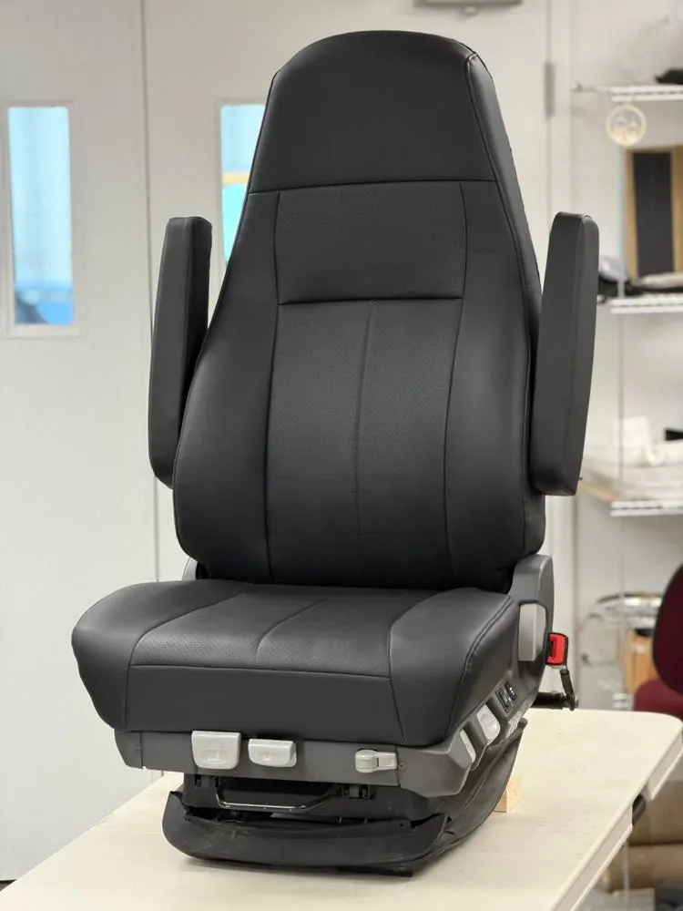
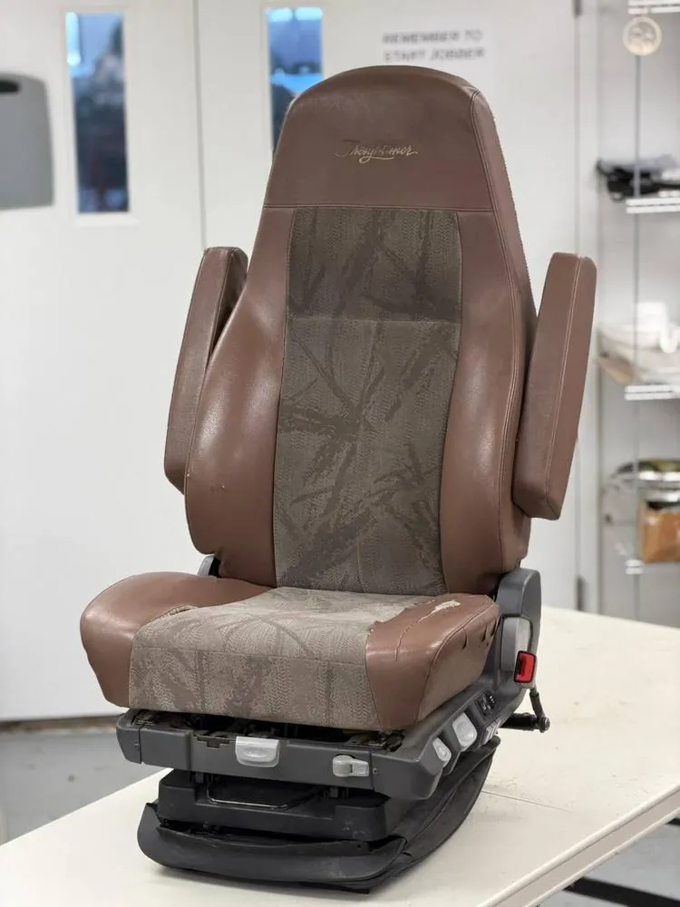
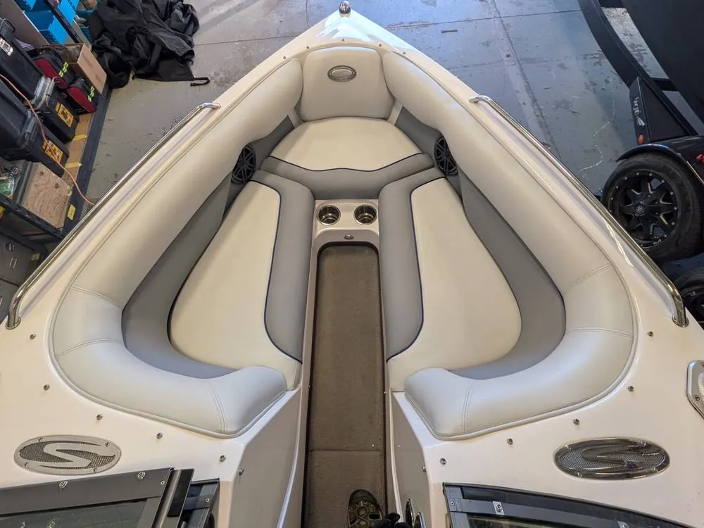
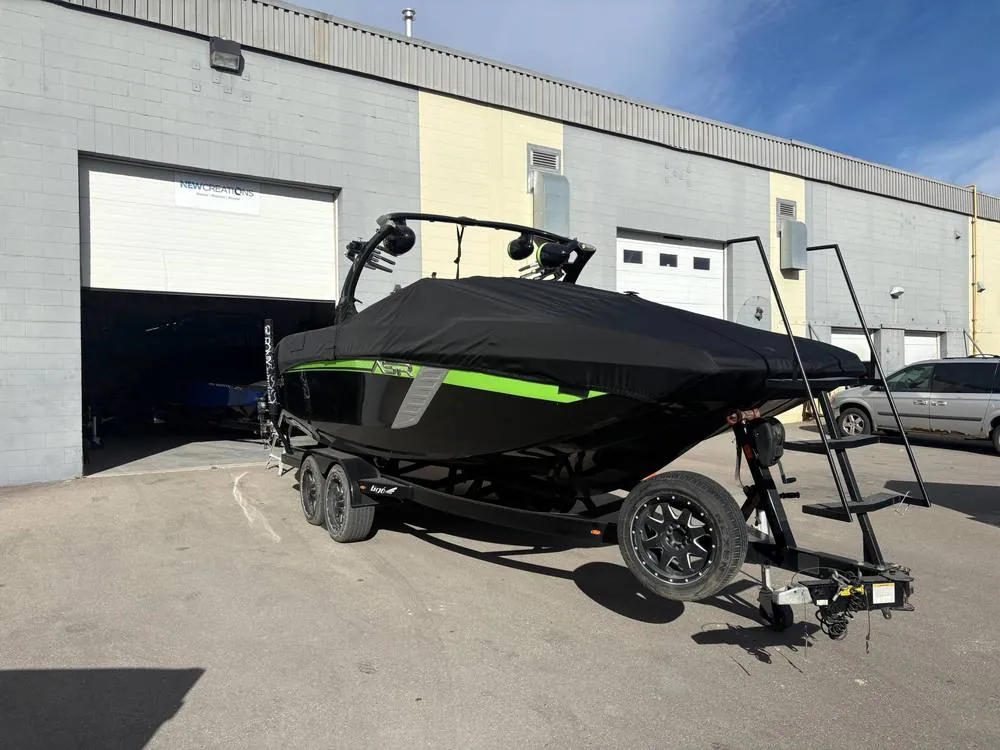
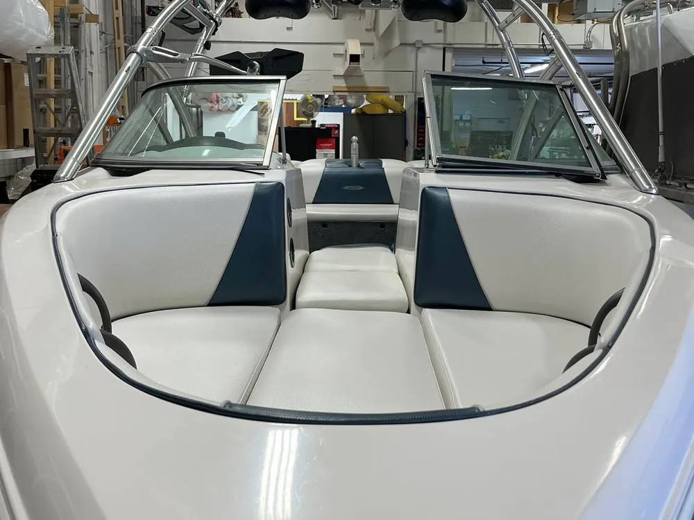
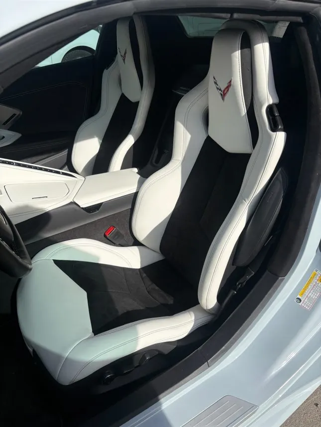
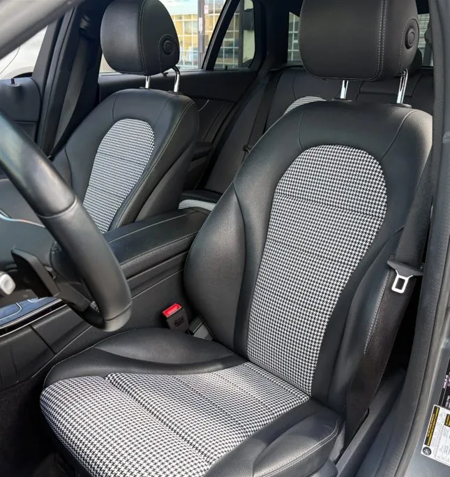
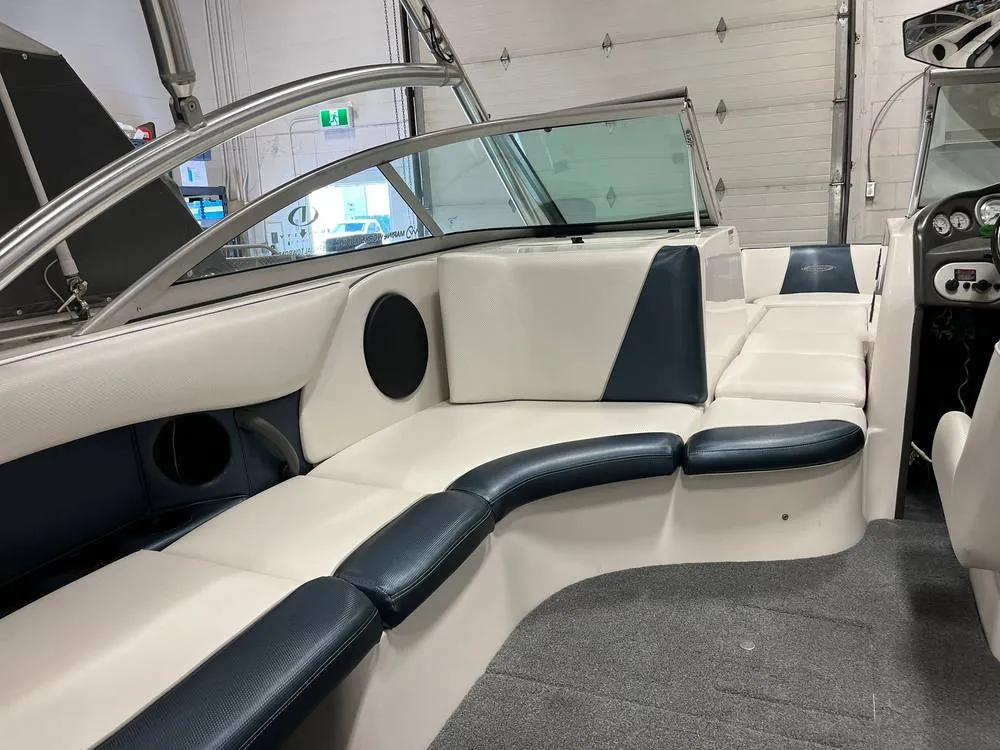

Cars & trucks
Auto seat & trim repair
Worn truck seat bolsters, and cracked leather and vinyl. We repair or replace what is worn, and most jobs can be done the same day with an appointment.
- Seat bolsters
- Leather & vinyl

Calgary, Alberta · Auto & marine upholstery
Seats, trim and boat tops, done right. Truck seat repair, car upholstery, boat upholstery and custom boat tops from a Calgary shop with over 60 years of combined experience. Most repairs can be turned around the same day with an appointment.
Before & after
Drag the slider on this Freightliner seat to compare the worn original with the finished job. Most seat repairs can be done the same day with an appointment.


BeforeAfterSame-day seat repairBy appointment · material in stock for most common vehicles
What we do
From patching one worn section to a complete interior, we have options to suit every budget. We only use materials from reputable, industry standard brands.
Cars & trucks
Worn truck seat bolsters, and cracked leather and vinyl. We repair or replace what is worn, and most jobs can be done the same day with an appointment.
Boats
Simple repairs, recovered seats or complete custom marine upholstery. We patch your boat top or build a new one, and we work with the major dealerships in town.
Interior upgrades
Change a cloth interior to leather with a kit from most major aftermarket makers, then add seat heaters to nearly any vehicle.
Finished jobs · swipe to browse






Our sister company
Mobile surface repair and restoration for interiors: homes, furniture and vehicles.
Visit New Creations (opens in a new tab)Google reviews
“Excellent work on our boat cover. Quality is great and fit is perfect.”
“Great service team. I had my leather driver seat repaired. Excellent job!! Looks brand new.”
“Fantastic company and quality. I’ve been using them for years. Highly recommended!”
“Great team, honest pricing, excellent craftsmanship. This is the place for all your upholstery requirements. Couldn’t recommend enough!”
“The customer service was fantastic but most of all the end result was absolutely perfect. They recovered my RV driver and passenger seats and they look brand new. Highly recommend.”
“We’re extremely happy with the results! Communication was easy, the service was quick, and everything turned out even better than we expected. Highly impressed with their work. We would definitely recommend them.”
Common jobs
| Problem | How we handle it |
|---|---|
| Worn truck seat bolster | Sliding in and out wears the edge. We replace the worn material and rebuild the foam. |
| Cracked or scratched leather | Repair of cracks and scratches in leather and vinyl seats. Send photos first. |
| Faded or torn boat top | We patch what you have or build an entire new top. |
| Tired boat seats | Recover existing seats or build complete custom upholstery. |
Marine
We work closely with the major manufacturer dealerships in Calgary, so wake boats, ski boats and pontoons come back looking factory fresh.
Don't see your brand? Ask us. These are examples of what we work on.